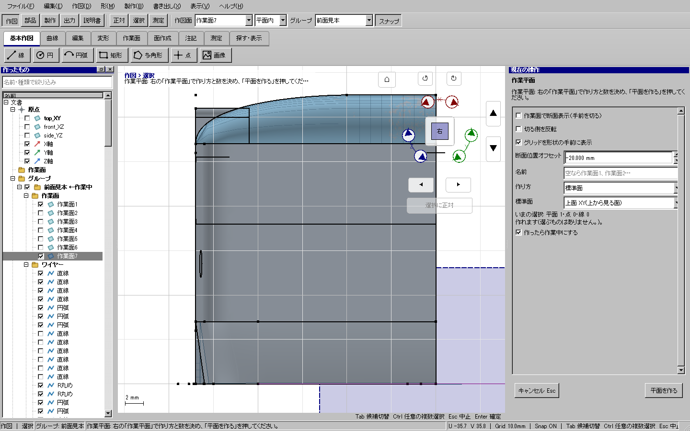
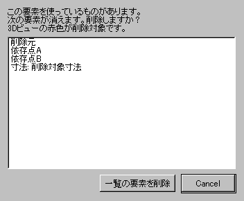

説明書へ戻る
作業面で断面表示・参照先を確認して削除
常時使える表示ボタン
上部の「スナップ」の右に「グリッド透過」と「平面ワイヤのみ」があります。作図・部品などのモードを替えても使えます。
- グリッド透過: オンなら面・ソリッドの手前にグリッドを表示し、オフなら形状の後ろに隠れます。作業面パネルの「グリッドを形状の手前に表示」と連動します。グリッド自体の表示／非表示とは別です。
- 平面ワイヤのみ: 上部「作図面」で選んだ平面内に全体が載るワイヤー・補助線・基準線・作図点だけを表示します。面・ソリッド・画像と別平面のワイヤーは隠れ、選択・吸着もしません。曲線は両端だけでなく形全体で判定します。複数平面にまたがる立体ワイヤーは対象外です。
平面を切り替えると表示対象も追従します。オフで元の表示に戻ります。左ペインの非表示設定、局所表示、選択のみ表示は変更しません。表示だけの操作なのでUndo履歴や保存モデルには入りません。
作業面7など、形状の奥にある面に作図する
- 左ペインで使う作業面を選び、「作業中にする」を押します。
- 「作業面に正対」で、作業面を正面から見ます。
- 「作業面」の右ペインで「作業面で断面表示（手前を切る）」をオンにします。必要な側が消えたら「切る側を反転」を切り替えます。作業面が形状の外にある場合は「断面位置オフセット」で切断位置を内側へずらしてください。これは表示専用で、作業面そのものは移動しません。
- 「グリッドを形状の手前に表示」をオンにすると、面が重なる部分でもグリッドが見えます。断面表示と独立に使えます。
- 作図します。「断面表示中 — 解除」またはチェックをオフにすると元の表示へ戻ります。
断面はモデルを削ったり分割したりしません。ワイヤーは作図の参照用に残ります。面・ソリッドは作業平面との交点で表示用の三角形を分割するため、平面をまたぐ面も表示できます。切り捨てた面の部分は面選択の対象にもなりません。表示専用の切断縁は編集ワイヤーではありません。断面表示中はソリッド・面の元の稜線を選択・スナップ対象から外し、切断後の面を選択します。作図したワイヤーの選択・スナップは維持します。
 115面.kcd2での断面表示。元ファイルは変更しません。
115面.kcd2での断面表示。元ファイルは変更しません。

切断せず、グリッドだけを手前へ表示することもできます。
この線・面・ソリッドを使っているものも消す
- 消す対象を選び、Deleteを押します。ワイヤーの途中を選べばその線分、左ペインでワイヤー全体を選べば全体が対象です。
- 参照する形状や寸法があると、削除される名前の一覧が開きます。3Dビューでは対象が赤色になります。非表示だった対象も、確認中だけ表示します。
- 一覧を確認し「一覧の要素を削除」を押します。やめる場合は「Cancel」またはEscで取り消します。
元の線分だけを削除する場合は、残りの線分を維持して、その線分を使っていた形状を削除します。確定した削除はCtrl+Zでまとめて取り消し、Ctrl+Yでやり直せます。原点の基準平面は削除できません。

削除前に、連鎖して消える要素を確認できます。元の面に依存させず厚みを付ける
「部品 → 厚み」または「平面まで厚み」で面と厚み・終端を選び、生成対象の下にある「元の面に依存させない（独立した部品）」をオンにして確定します。初期値はオフで、従来どおり元の面に追従します。オンなら作成時点の形が固定され、元の面を変更・削除しても部品は残ります。独立した部品も、保存・再読込とUndo／Redoに対応します。境界ワイヤーは生成方法によらず独立です。